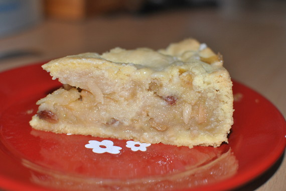

Gedeckter Apfelkuchen

- Zubereitung: ca. 50 Minuten
- Backzeit: ca. 50 Minuten
- Für 1 Springform (26 cm Durchmesser)
Zutaten
Für den Teig
- 175 g Butter
- 300 g Mehl
- 100 g Zucker
- 1 Eigelb
Für die Füllung
- 1,5 kg säuerliche Apfel (z.B. Boskop)
- 1 EL Butter
- 100 g Mandelstifte
- 100 g Zucker
- 50 g Rosinen
- 1/2 TL Zimtpulver
- Saft von 1 Zitrone
- 1-2 EL Semmelbrösel
Für den Guss
- 100 g Puderzucker
- Saft von 1/2 Zitrone
Zubereitung
- Butter, Mehl, Zucker und Eigelb rasch zu einem Teig kneten. In Folie wickeln und 30 Minuten kalt stellen. Inzwischen Äpfel schälen, vierteln, entkernen und quer in Blättchen schneiden. Butter in einem Topf erhitzen, Mandeln darin goldgelb
rösten. Äpfel, Zucker, Rosinen, Zimt und Zitronensaft zufügen. Zugedeckt 10 Minuten dünsten.
- Backofen auf 175° Celsius vorheizen. Zwei Drittel des Teigs auf bemehlter Fläche ausrollen, eine gefettete Springform mit Rand damit auskleiden. Boden mit Semmelbröseln bestreuen. Apfelmasse abtropfen lassen und in der Form verteilen. Übrigen
Teig ausrollen und als Deckel auf die Äpfel legen. Am Rand entlang festdrücken.
- Kuchen im Ofen auf unterer Schiene bei 175° Celsius etwa 50 Minuten backen. Inzwischen für den Guss Puderzucker und Zitronensaft miteinander verrühren. Nach Ende der Backzeit den heißen Kuchen damit bestreichen und abkühlen lassen.